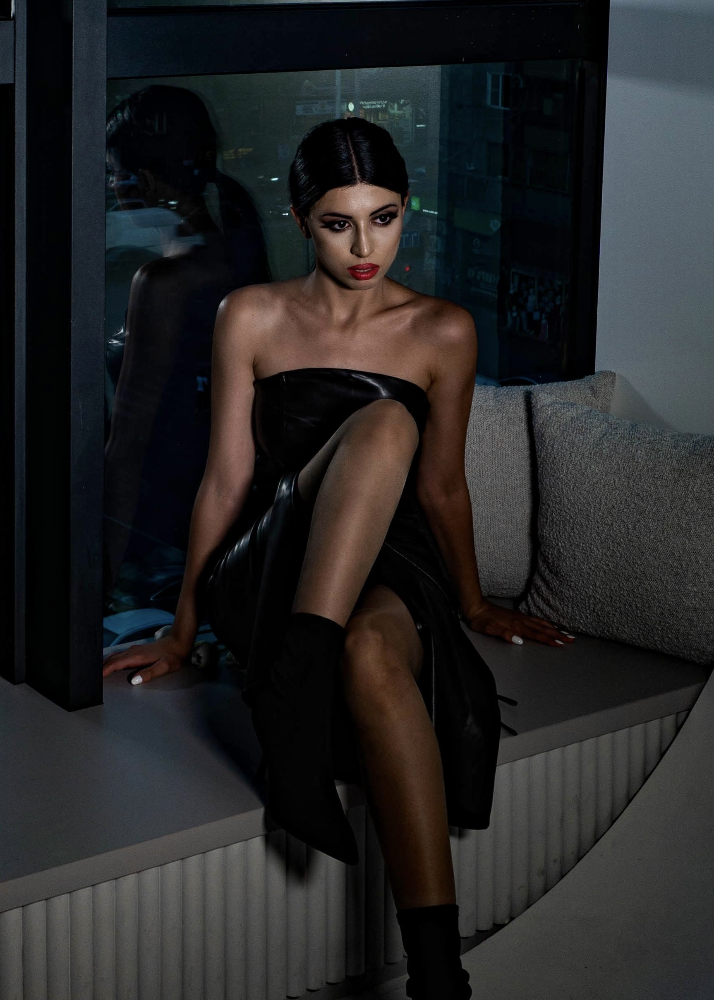

Meri Chakhmakhchyan is a fashion model with two years of experience in Armenia and Spain. She has walked the runway at the Spain Fashion Show and contributed to various fashion and art projects. Her portfolio includes collaborations with renowned fashion brands such as Roberto Piraloff, SKFK, and Moment of White.